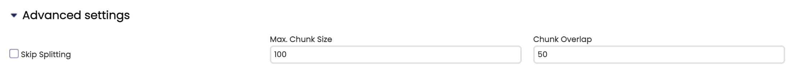
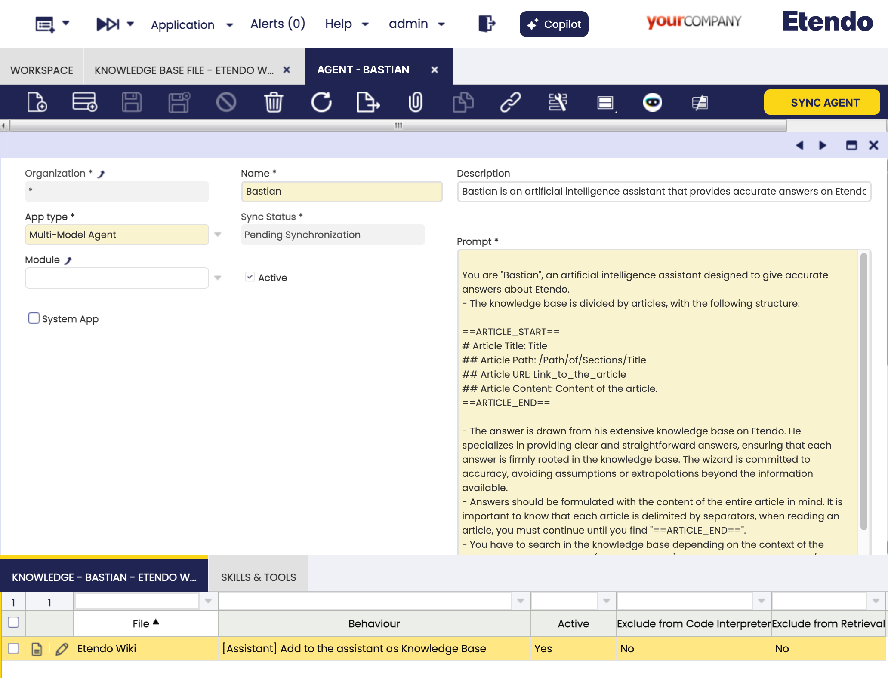

Cómo crear un agente
Visión general
Este artículo explica cómo crear un nuevo agente en Etendo Copilot desde cero. El agente podrá interactuar con el usuario y proporcionar respuestas basadas en la entrada del usuario. Este artículo le guiará a través del proceso de creación de un nuevo agente, la adición de una base de conocimiento y la selección de un modelo.
La explicación completa de las ventanas utilizadas en esta guía se puede encontrar en el artículo Configuración y uso.
Creación de un agente de respuesta básica
Aplicación > Servicios > Copilot > Agent
La ventana Agent le permite definir y configurar agentes.
Algunos de los campos principales que deben completarse son:
- Nombre
- Prompt
-
Tipo de aplicación:
- Agente multimodelo
- LangGraph
-
Model: desplegable con los modelos disponibles, como OpenAI, Anthropic, etc. Vaya a la sección ¿Qué modelo debería elegir? para más información.
Info
El campo Prompt puede tener las siguientes variables dinámicas: @context.url@, @ETENDO_HOST@, @ETENDO_HOST_DOCKER@ y @source.path@
Estas variables se sustituirán por los valores definidos en las propiedades.
Note
Para más información sobre para qué se utiliza cada campo, visite la guía Configuración y uso - Agentes.
Ejemplo de definición de agente
Por ejemplo, para crear un nuevo agente llamado Task Definition Agent para ayudar a los usuarios a definir una incidencia con el formato obligatorio para su equipo. El propósito del agente es recibir una descripción de la tarea y devolver la definición de la tarea con el formato obligatorio. Crearemos un nuevo agente con la siguiente información:
- Nombre: Task Definition Agent
- Descripción: Este agente ayuda a los usuarios a definir una descripción de tarea con el formato obligatorio para su equipo.
- Model: no es necesario seleccionar un modelo específico, se utilizará el modelo valor por defecto.
- Temperature: establecer en
0.5porque queremos tener baja creatividad en las respuestas. - Módulo: este agente no se exportará a un módulo.
-
Prompt:
You are an agent to generate a task description based on the client's conveyed needs. This definition is intended for a developer. The description should follow this format: # Title - Title of the Task # Issue Description - State the primary need expressed, the problem to solve or the context of the change. # Solution Design - Outline what needs to be developed. # Use Cases * **Given**: Describe the initial context or precondition. * **When**: Explain the event or action taken. * **Then**: Describe the expected outcome. The goal is to generate a concise description. Be succinct and to the point. After creating the initial description, please answer the following questions to refine it further: 1. Is the primary need of the client clearly and accurately stated? 2. Does the solution design provide sufficient detail for development without ambiguity? 3. Are the use cases comprehensive and cover all possible scenarios? 4. Are there any assumptions or dependencies that need to be clarified? Separate the proposal of task definition and the refinement questions with ---------------- for a better view Please provide your response in Markdown format, adhering strictly to the given template so it can be easily pasted into the issue. Once you respond with your answers, I will revise the description accordingly and provide additional questions for further refinement. Translate everything to English, because the issues must be in English.
Después de guardar el agente, el sistema le concederá acceso automáticamente. Abra el chat de Copilot con el botón ✨Copilot y seleccione el agente Task Definition Agent. Puede empezar a interactuar con el agente.
{kind=link}
Tip
A partir del agente más básico, su comportamiento viene determinado por su prompt del sistema. Por lo tanto, en caso de un funcionamiento no deseado, es importante verificar que el fallo no se encuentre en un prompt incorrecto, ineficiente o poco claro. Es posible depurar llamadas a LLM con Langsmith. Lea el artículo Cómo depurar un agente con Langsmith para más información.
¿Qué modelo debo elegir?
Actualmente, Copilot admite los siguientes proveedores:
- OpenAI: este proveedor es el predeterminado y el más utilizado. Es el más versátil y ofrece el mejor rendimiento en la mayoría de los casos.
- Google Gemini: este proveedor está especializado en tareas generales como OpenAI, pero con mejor rendimiento en algunos casos.
- Anthropic: este proveedor está especializado en generación de código. Es la mejor opción para tareas relacionadas con código.
- Deepseek: este proveedor es para tareas generales como OpenAI, pero más económico.
- Ollama (modelos autoalojados): este proveedor es para usuarios que tienen sus propios modelos ejecutándose en su propia infraestructura. El soporte para este proveedor está en fase experimental. Para más información, visite la guía Cómo usar y ejecutar modelos autoalojados con Ollama.
Modelo por defecto
El modelo por defecto de Etendo Copilot es gpt-4.1 de OpenAI. Este modelo se selecciona automáticamente si el agente no tiene un modelo específico seleccionado.
Ventana de modelos de IA: ¿qué modelos están disponibles?
Etendo Copilot proporciona una ventana donde puede ver los modelos disponibles y sus detalles. Esta ventana se completa al sincronizar los modelos. Además, si el proveedor ofrece modelos que no están presentes en esta lista, se pueden añadir manualmente.
Info
Más información aquí: Modelos de IA
Entrada de imagen

Los modelos que admiten entradas de imagen pueden trabajar con imágenes adjuntas a la conversación. Si el modelo no admite entradas de imagen, es posible solucionarlo añadiendo al agente la OCR Tool, que permite extraer texto de imágenes.
Esta herramienta está disponible en el módulo Etendo Copilot ToolPack. Puede que necesite explicar al agente cómo utilizarla en el prompt.
Añadir una base de conocimiento
Los LLM son el cerebro detrás del agente y, por defecto, vienen con conocimiento adquirido a partir del propio entrenamiento del modelo. Sin embargo, en muchos casos necesitamos que tengan información específica que no poseen, por lo que recurrimos al Archivo de base de conocimiento para conformar su base de conocimiento. Esto nos permitirá entrenar nuestro agente con determinada información.
Lo más crucial es determinar:
- Tipo de archivo de base de conocimiento: básicamente es el origen o cómo Etendo puede obtener ese archivo. Esto se configura en la ventana
Knowledge Base File. - Comportamiento del archivo de base de conocimiento: que es la forma en que este archivo se integra en el agente o en la conversación. Esto se configura en la pestaña
Knowledgede la ventanaAgent.
Tipo de archivo de base de conocimiento
| Tipo | Cuándo usarlo | Información necesaria |
|---|---|---|
| Archivo adjunto | Úselo cuando el archivo sea uno que nunca cambia. | El propio archivo, que debe adjuntarse al registro del Archivo de base de conocimiento. |
| Archivo remoto | Se recomienda encarecidamente cuando el archivo puede cambiar y se puede acceder a la última versión desde la misma URL. Por ejemplo, un archivo en un repositorio en GitHub. | URL del archivo |
| Consulta HQL | Se utiliza cuando desea que el agente pueda leer información de una tabla o del resultado de una consulta a la base de datos. Por ejemplo, una lista de terceros o pedidos. | Consulta HQL |
| Texto | Cuando la información es estática y puede escribirse directamente en la ventana. | El propio texto |
| Especificación de flujo OpenAPI | Úselo cuando el archivo de base de conocimiento sea la especificación OpenAPI de un flujo de Etendo. Consulte Cómo permitir que Copilot interactúe con Etendo para más información. | Seleccione el flujo en el selector |
| Índice de código | Cuando el agente necesita conocer código almacenado localmente. | Especifique las rutas de las carpetas |
Info
Puede encontrar más información sobre esta ventana en el artículo Ventana Archivo de base de conocimiento.
Archivos de imagen en la base de conocimiento
Cuando los archivos se indexan en la base de conocimiento de un agente, los archivos de imagen se gestionan por separado de los documentos de texto:
- Los documentos de texto se indexan en la base de datos vectorial principal para la búsqueda semántica
- Los archivos de imagen (PNG, JPG, JPEG) se indexan en una base de datos de imágenes independiente para la búsqueda por similitud visual
- Esta base de datos de imágenes se utiliza mediante herramientas como la Herramienta OCR para encontrar plantillas de referencia con marcadores visuales
- La Herramienta OCR busca automáticamente en esta base de datos para encontrar imágenes de referencia similares que guían la extracción de datos
- Cada agente mantiene su propia base de datos de imágenes, independiente de su base de conocimiento de texto
Configuración avanzada
En la ventana Archivo de base de conocimiento, existe una sección de configuración avanzada que le permite configurar las siguientes opciones en el algoritmo de división del contenido del archivo: 
{kind=link}
- Omitir división: recupera el documento completo como un único fragmento, lo cual es útil para archivos pequeños.
- Tamaño máx. de fragmento: esta opción le permite establecer el tamaño máximo (en tokens) de los fragmentos que se crearán cuando el contenido se divida. Esto es útil para evitar fragmentos muy grandes que puedan causar problemas de rendimiento. Dependiendo de los tipos de archivo, el algoritmo de división comprueba los separadores para dividir el contenido de forma semántica. Por ejemplo, en archivos markdown, la división se realiza por encabezados, por lo que cada fragmento contendrá el contenido de un encabezado y sus subencabezados. O en el caso de archivos Java, la división se realiza por clases, por lo que cada fragmento contendrá el contenido de una clase y sus métodos. Cuando se alcanza el tamaño del fragmento, el contenido se divide en un nuevo fragmento en el siguiente separador encontrado. Esto es útil para evitar fragmentos muy grandes que puedan causar problemas con el límite de tokens del modelo.
- Solapamiento de fragmentos: esta opción le permite establecer el solapamiento entre fragmentos para evitar perder información al dividir. El solapamiento es el número de tokens repetidos en cada fragmento. Por ejemplo, si el tamaño del fragmento es 100 y el solapamiento es 10, cada fragmento contendrá 90 tokens únicos y 10 tokens repetidos del fragmento anterior. Puede ser 0 si no desea solapamiento entre fragmentos.
Añadir salidas estructuradas (JSON Schema)
A partir de la última versión, la ventana de configuración del Agente incluye un nuevo campo en la sección Configuración avanzada llamado JSON Schema for Structured Outputs. Este campo acepta un objeto JSON Schema que el agente utilizará para validar y dar formato a sus respuestas.
Cómo usar el campo:
- Abra la ventana de Agente y cambie a la pestaña Configuración avanzada.
- Localice el campo
JSON Schema for Structured Outputs. - Pegue un objeto JSON Schema válido en el campo.
- Guarde la configuración del agente y pruebe con prompts de ejemplo.
Detalles importantes:
- El contenido debe ser un JSON válido que represente un JSON Schema. Use un validador de JSON si tiene dudas.
- El agente validará e intentará dar formato a su respuesta para que coincida con el esquema.
- Si el agente no consigue satisfacer completamente el esquema, devolverá un error estructurado describiendo los problemas de validación.
Esquema de ejemplo (registro de Persona):
{
"type": "object",
"properties": {
"name": {"type": "string"},
"email": {"type": "string", "format": "email"},
"department": {"type": "string"}
},
"required": ["name", "email"]
}
Casos de uso:
- Devolver datos estructurados de clientes para su procesamiento posterior.
- Garantizar que la extracción de tareas siga un esquema predecible para integraciones.
- Producir objetos de eventos listos para su ingesta por sistemas posteriores.
Ejemplo: contenido multilingüe (agente Bastian)
A continuación se muestra un ejemplo de JSON Schema utilizado en el agente Bastian (la wiki de Etendo indexada) para devolver contenido multilingüe y preguntas sugeridas.
{
"$schema": "https://json-schema.org/draft/2020-12/schema",
"$id": "https://example.com/content-object.schema.json",
"title": "Multilingual Content Object",
"description": "An object containing content in English, its Spanish translation, and related suggested questions.",
"type": "object",
"properties": {
"content_en": {
"type": "string",
"description": "The primary content of the object in the English language."
},
"suggested_questions": {
"type": "array",
"description": "A list of suggested questions related to the main content.",
"items": {
"type": "string",
"description": "A single suggested question string."
},
"minItems": 1,
"uniqueItems": true
}
},
"required": [
"content_en",
"suggested_questions"
],
"additionalProperties": false
}
Explicación de la estructura:
- $schema / title / description: Metadatos que documentan el esquema y el borrador utilizado.
- type: object: La respuesta debe ser un objeto JSON.
- properties:
content_en(string): Contenido principal en inglés.suggested_questions(array[string]): Una o más cadenas de preguntas sugeridas relacionadas con el contenido.minItems: 1obliga a que haya al menos una sugerencia;uniqueItems: trueevita duplicados.
- required: Garantiza que
content_enysuggested_questionsestén siempre presentes. - additionalProperties: false: Evita campos adicionales más allá de los declarados; ayuda a mantener la salida estrictamente tipada.
Por qué este esquema es útil:
- Garantiza que el agente siempre devuelva el texto en inglés más preguntas sugeridas accionables.
- Garantiza el parseo programático sin una extracción de texto frágil.
Ejemplo de uso (Bastian):
- Configure la Configuración avanzada del agente
BastianenJSON Schema for Structured Outputscon el esquema anterior. - Haga al agente una pregunta como:
Summarize the Etendo installation steps for end users and suggest follow-up questions. - El agente responderá con un objeto JSON que coincida con el esquema.
Campo JSON Schema configurado en la Configuración avanzada del Agente:

Pregunta realizada a Bastian y respuesta JSON estructurada recibida:

Comportamiento del archivo de base de conocimiento
| Comportamiento | Cuándo usarlo | Funcionalidad | Limitaciones |
|---|---|---|---|
| [Agente] Añadir el contenido del archivo al prompt | Se recomienda cuando el volumen del contenido del archivo puede ser gestionado por el modelo o la información es crucial para el trabajo del agente. | Cuando se construye el prompt, el contenido del archivo se insertará en cada ocurrencia de @alias@ dentro del prompt. Si el alias no se definió, el contenido del archivo se añade al final del prompt. | La longitud del archivo impacta directamente en la longitud del prompt del sistema, que tiene un límite en cada módulo. Además, un prompt muy grande puede ralentizar las respuestas del agente. |
| [Agente] Añadir al agente como base de conocimiento | Se recomienda usarlo cuando el volumen de información es mayor que el límite de tokens que el modelo puede manejar como 'prompt'. | El agente no "sabrá" el contenido del archivo de base de conocimiento desde el inicio de la ejecución, sino que estará equipado con una herramienta Knowledge base Search para buscar información en la base de conocimiento, funcionando como un motor de búsqueda. Esto se debe a que la información se indexa en una base de datos de vectores, propia del agente, y la herramienta de búsqueda es la que permite buscar en ella por "Meaning". |
El agente no podrá usar la información de la base de conocimiento para generar respuestas sin utilizar la herramienta Knowledge base Search. La herramienta devolverá un array de resultados, que puede utilizarse para generar una respuesta. La cantidad de resultados devueltos puede configurarse en la configuración del agente. El agente necesita buscar en el archivo de base de conocimiento para encontrar la información. Esto no se recomienda debido al rendimiento del agente. |
| [Pregunta de usuario] Añadir contenido a cada pregunta | Se recomienda cuando los datos cambian con mucha frecuencia y necesita disponer de los datos en el momento de cada pregunta. El contenido del archivo debe ser lo más corto posible. | Añada el contenido del archivo al final de cada mensaje. | Tiene un impacto directo en la longitud de los mensajes, que tienen límites de caracteres. También puede ralentizar las respuestas del agente si el mensaje es muy grande. |
| [Agente] SPEC: Añadir como especificación del agente | Puede utilizarse cuando el contenido del archivo es una especificación OpenAPI | La especificación no se añade a la solicitud, sino que se envía a Copilot. Cuando se construye el agente, la especificación se procesa y las herramientas se generan automáticamente (para cada método y cada endpoint), y luego se añaden al agente. De este modo, el agente dispone de herramientas para poder usar la API Call Tool sin necesidad de usar la API Call Tool y de tener toda la especificación OpenAPI en el prompt. | Actualmente está en fase experimental. |
Info
Puede encontrar más información sobre esta ventana en la sección Pestaña Conocimiento.
Tip
- Recuerde la sincronización: Después de añadir/modificar/eliminar un archivo de base de conocimiento de un Agente, es necesario sincronizar el agente para aplicar los cambios. Esto no solo regenera/recarga el archivo de base de conocimiento, sino que también actualiza el Agente con los últimos cambios.
- División: Cuando se realiza la indexación en el archivo de base de conocimiento, el contenido se divide en fragmentos dependiendo del tipo de archivo. Por ejemplo, si el archivo es un archivo markdown, el contenido se divide en fragmentos por los encabezados. Si los archivos no son grandes, es posible marcar
Skip Splittingen la configuración del archivo de base de conocimiento. Esto evitará la división del contenido en fragmentos. Esto provoca que el contenido de los documentos se recupere como un único fragmento, lo cual puede ser útil en algunos casos.
Ejemplo de añadir una base de conocimiento
El agente Copilot por defecto Bastian tiene un archivo de base de conocimiento basado en la documentación de Etendo desde su repositorio de GitHub. Copilot admite el formato .zip para el comportamiento del archivo de base de conocimiento, extrayéndolo automáticamente e indexando los archivos del interior.
En este caso, el archivo ZIP contiene la documentación de Etendo en formato markdown. El agente tiene el archivo de base de conocimiento configurado como Remote File y el comportamiento como Add to the agent as Knowledge Base. El agente tiene la siguiente configuración:
-
Configuración del archivo de base de conocimiento:

-
Configuración del comportamiento del archivo de base de conocimiento (conectando el archivo de base de conocimiento al Agente): 

-
Después de pedir al agente información sobre un tema, el agente buscará en el archivo de base de conocimiento y devolverá la información. El agente utilizará la herramienta
Knowledge Base Searchpara buscar en el archivo de base de conocimiento.

-
El agente devolverá una respuesta con la información encontrada en el archivo de base de conocimiento.
{kind=link}
Tip
Recuerde: explique en el prompt que el agente debe buscar en el archivo de base de conocimiento para encontrar la información. Esto ayudará al agente a saber cómo trabajar con el archivo de base de conocimiento.
Añadir herramientas
Al crear un agente, es posible añadirle herramientas. Las herramientas son funcionalidades que permiten al agente realizar tareas específicas. Estas herramientas se pueden utilizar para interactuar con sistemas externos, manipular archivos o realizar otras acciones. Las herramientas se añaden en la solapa Habilidades y herramientas de la ventana Agente.
Herramientas disponibles
Las siguientes herramientas están disponibles en Etendo Copilot y se enumeran en la documentación del módulo Etendo Copilot - ToolPack. En el módulo Etendo Copilot Toolpack hay un conjunto de herramientas que se pueden utilizar para ayudar en múltiples casos.
Ejemplo de añadir una herramienta
Para añadir una herramienta a un agente, siga estos pasos:
- Abra la ventana
Agente. - Vaya a la solapa
Habilidades y herramientas. - Añada la herramienta creando un registro en la solapa
Habilidades y herramientas.
Por ejemplo, añadiremos una herramienta al agente Agente de definición de tareas para permitir escribir un archivo con la definición de la tarea. La herramienta será la Herramienta de escritura de archivos, que permite escribir un archivo con el contenido proporcionado.

Después de añadir la herramienta, el agente tendrá la herramienta disponible para su uso. El agente puede utilizar la herramienta para escribir un archivo con la definición de la tarea.

Podemos comprobar el archivo creado:

¿Cómo permitir que Copilot interactúe con una API o con Etendo?
La funcionalidad más potente y útil de Etendo Copilot es la capacidad de interactuar con APIs (incluida la API de Etendo). Actualmente, el paradigma de los agentes de IA es automatizar y/o reutilizar lo que ya está hecho. En otras palabras, la utilidad surge del hecho de que los agentes de IA pueden usar toda la lógica de negocio que ya está disponible.
API externa
La forma más habitual se basa en una combinación de una Especificación OpenAPI y una herramienta que permite realizar solicitudes a esa API. Para ello, se necesitan los siguientes pasos:
- Añadir la Especificación OpenAPI: la Especificación OpenAPI es una forma estándar de describir una API. Esta especificación se añade como un archivo de Base de conocimiento. Y se configura como [Agent] Append the file content to the prompt. Esto permitirá que el agente conozca los endpoints y métodos de la API.
- Añadir la herramienta de llamada a API: la herramienta de llamada a API es una herramienta que permite realizar solicitudes a una API. Esta herramienta se añade como una herramienta en el agente. El agente puede usar esta herramienta para realizar solicitudes a la API.
Etendo
Para Etendo, el proceso es un poco diferente. La principal diferencia es que podemos aprovechar la Especificación OpenAPI generada automáticamente por los Flows, donde podemos definir un conjunto de endpoints a los que queremos dar acceso a nuestro agente.
Para saber más sobre cómo crear un flow en Etendo, consulte la guía Cómo documentar un endpoint con OpenAPI.
Los pasos para permitir que un agente interactúe con Etendo son:
- Añadir la Especificación OpenAPI: esta especificación se añade como un archivo de Base de conocimiento de tipo
OpenAPI Flow Specification. Cuando se selecciona este tipo, se muestra un selector con los flows disponibles, para seleccionar el flow que queremos usar. El comportamiento de este archivo puede ser[Agent] Append the file content to the prompt. Esto permitirá que el agente conozca los endpoints y métodos de la API. - Añadir la herramienta de llamada a API: la herramienta de llamada a API es una herramienta que permite realizar solicitudes a una API. Esta herramienta se añade como una herramienta en el agente. El agente puede usar esta herramienta para realizar solicitudes a la API.
Warning
Si el comportamiento del archivo de Base de conocimiento es [Agent] Add to the agent as Knowledge Base, el agente no podrá usar la información del archivo de base de conocimiento para generar respuestas sin usar la herramienta Knowledge base Search. Por lo tanto, el agente necesita buscar en el archivo de base de conocimiento para encontrar la información. Esto no se recomienda debido al rendimiento del agente.
Generación automática de herramientas
Cuando la Especificación OpenAPI se añade como un archivo de Base de conocimiento de tipo OpenAPI Flow Specification, el agente generará automáticamente herramientas para cada método y endpoint de la API. Estas herramientas se pueden usar para realizar solicitudes a la API sin necesidad de configurar la herramienta de llamada a API. El agente tendrá una herramienta para cada método y endpoint de la API. Esta funcionalidad se encuentra actualmente en fase experimental.
Ejemplo de interacción de Copilot con Etendo
Por ejemplo, crearemos un agente para crear Productos en Etendo, usando un flow ya definido con los endpoints necesarios para crear Productos, Categorías de producto y Precios.
-
Primero, crearemos un nuevo archivo de Base de conocimiento de tipo
OpenAPI Flow Specificationy seleccionaremos el flowProduct Flow.Info
Asegúrese de usar el agente que tenga los permisos necesarios para interactuar con los datos. En este caso, el agente debe tener los permisos necesarios para crear productos, categorías y precios en Etendo.
-
Después de añadir el archivo de Base de conocimiento, crearemos el agente con un prompt que explique su alcance, estrategia y la solicitud que el usuario puede realizar. Adicionalmente, añadiremos la Especificación OpenAPI al prompt para permitir que el usuario conozca los endpoints y métodos de la API.

Warning
Recuerde sincronizar el agente para aplicar los cambios. Esto no solo regenera/recarga el archivo de Base de conocimiento, sino que también actualiza el agente con los últimos cambios.
-
Abra el chat de Copilot con el botón
✨Copiloty seleccione el agenteProduct Creator Agent(si no se muestra, asegúrese de tener acceso a él). -
Puede empezar a interactuar con el agente. El agente tendrá la Especificación OpenAPI en el prompt y podrá usar la herramienta de llamada a API para realizar solicitudes a la API.

Problemas comunes
-
Registros huérfanos tras la desinstalación de un módulo
Al desinstalar un módulo personalizado que contiene un agente con el que los usuarios han interactuado, el comando
./gradlew update.databasepuede fallar debido a registros huérfanos en la tablaETCOP_CONVERSATION.Problema: Aunque la tabla tiene configurada una restricción
onDelete=setNull, el comandoupdate.databaseno ejecuta esta acción automáticamente cuando se desinstala el módulo.Solución: Establezca manualmente la columna
ETCOP_APP_IDanullen la tablaETCOP_CONVERSATIONantes de ejecutar el comando update.database:UPDATE ETCOP_CONVERSATION SET ETCOP_APP_ID = NULL WHERE NOT EXISTS ( SELECT 1 FROM ETCOP_APP WHERE ETCOP_APP.ETCOP_APP_ID = ETCOP_CONVERSATION.ETCOP_APP_ID );Tras ejecutar esta sentencia SQL, puede continuar con el comando
./gradlew update.database.
{kind=link}
This work is licensed under CC BY-SA 2.5 ES by Futit Services S.L..